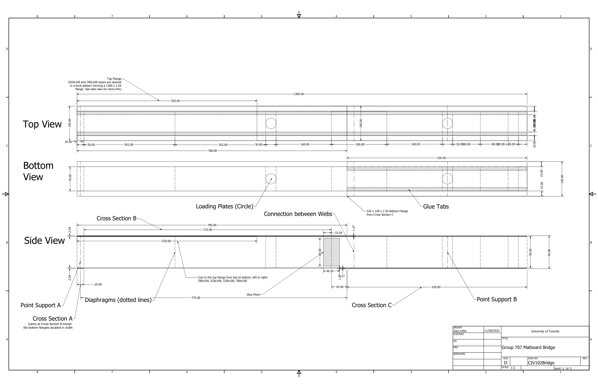
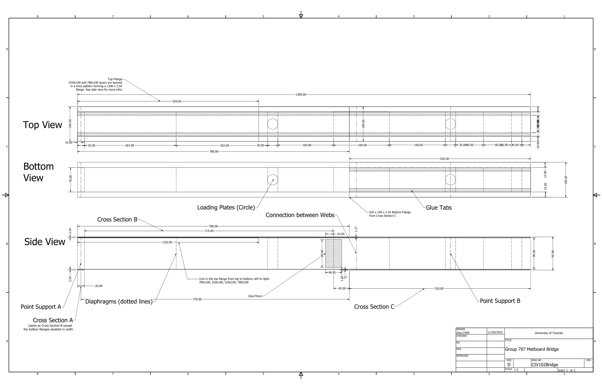
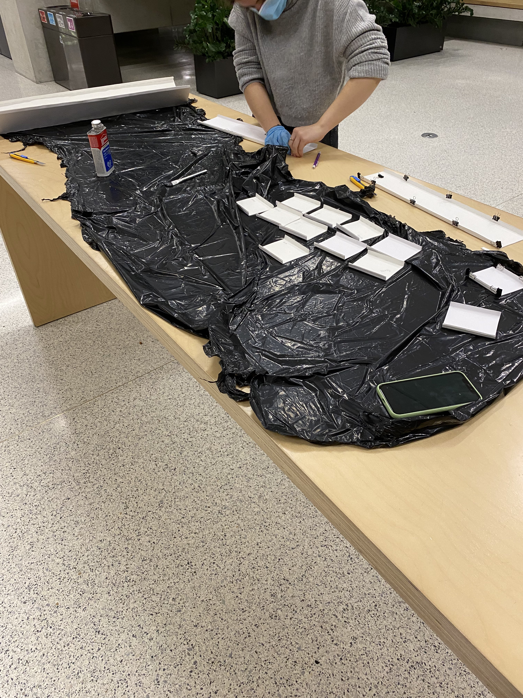
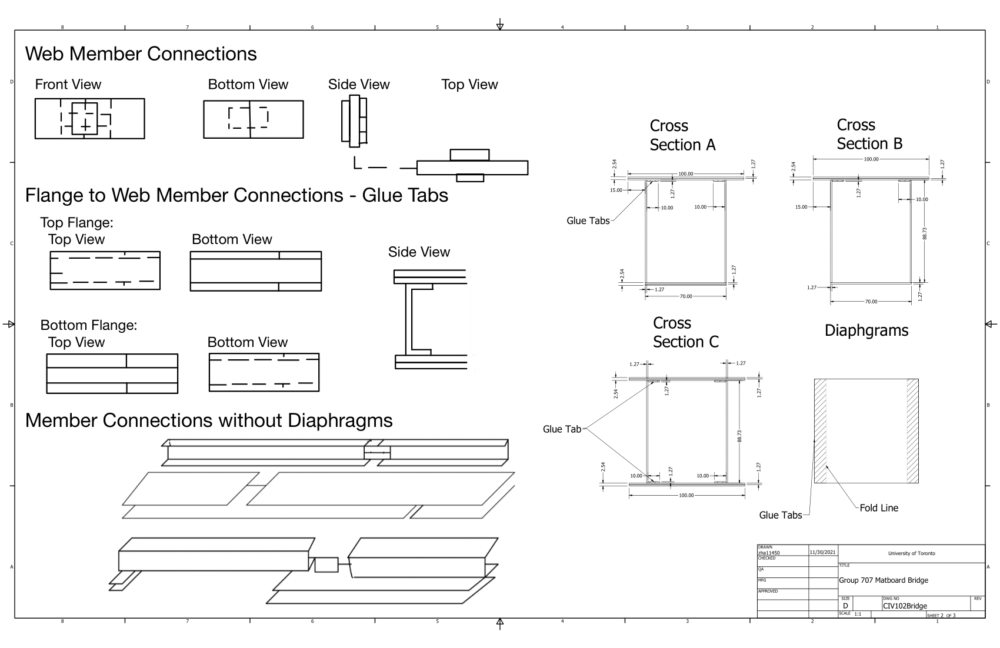
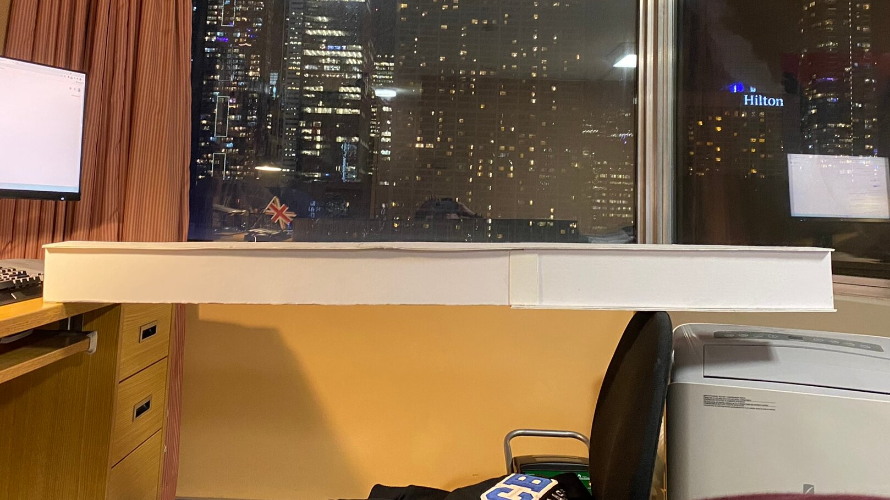
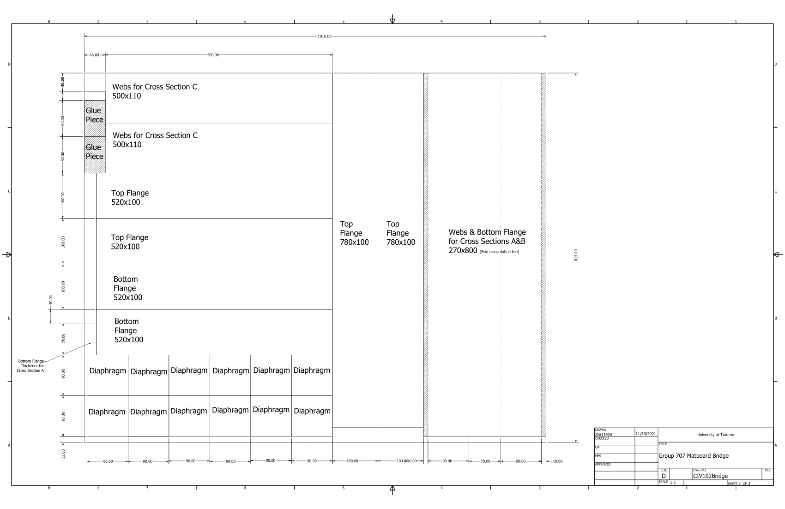
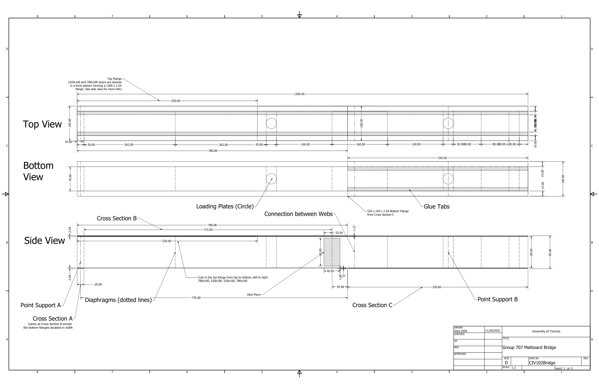

project
The matboard bridge project was the first major engineering project I had as an undergraduate engineering student. It was a project that in hindsight was more of a test of engineering spirit than a complicated, logic puzzle. We were given a certain set of requirements, a large piece of matboard, contact cement, and the vague instructions of "make sure this 400N train can pass over the bridge".
Given that we only had one shot, we could not miss our chance to blow. We wrote a program in MATLAB to perform the load calculations and failure modes, and from it created a program to display the failure modes and then optimize the size of structural elements like the flanges, webs, diaphragms, etc. The program determined the optimal size of the elements given the constraints of the rectangular matboard, and minimized waste.
Having put in significant effort into the design phase of this project, the fun could finally begin. The preparation of the matboard bridge required careful, intricate cutting, as well as a slow application of the adhesive contact cement to the joining flaps and sustained force. This slow, methodical process took over 24h, resulting in a story for the ages.
The finished product, "No Name", was a box girder bridge. After successfully passing the 400N dynamic loading scenario, it came time to prove our worth as engineers. The static loading test was a test to failure, in a competition for the honour of being the greatest structural engineer. Our bridge, made of paper pulp, withstood a max static load of 1326N, breaching previous records by over 100N! While we did not achieve first place, 5th in a was a worthy prize nonetheless.
The most important lesson I learnt from this project was to trust myself, and my team. We all had the skills to achieve what we did, but in the beginning the task itself was intimidating enough to make us shy away. Being forced to approach it made us realize that with a methodical, tactical approach, and careful planning, you really only need one shot. And we were more than competent at not only taking that shot, but taking a shot at the top prize.